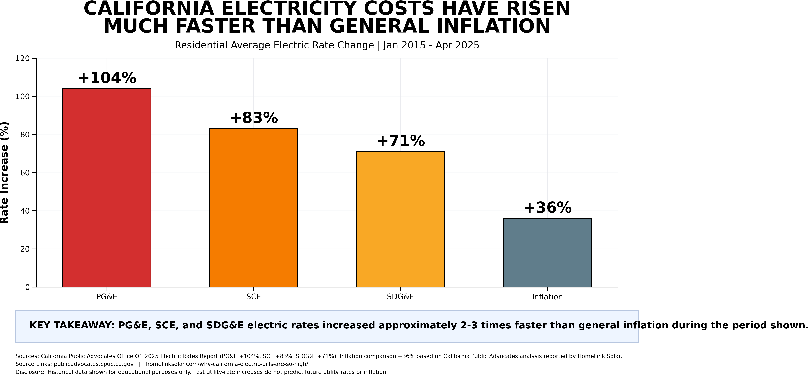

Chart 1: Residential Electric Rate Change vs. General Inflation

The household question
If an essential recurring cost rises faster than general inflation for an extended period, how could that affect savings, retirement planning, and other household priorities?
What this chart shows
The chart shows published percentage changes in residential average electric rates for the three named investor-owned utilities and a general-inflation comparison over the chart’s stated period.
What this chart does not show
It does not represent every customer’s bill, every rate plan, fixed charges, discounts, household usage, or future price changes. Actual household results vary.